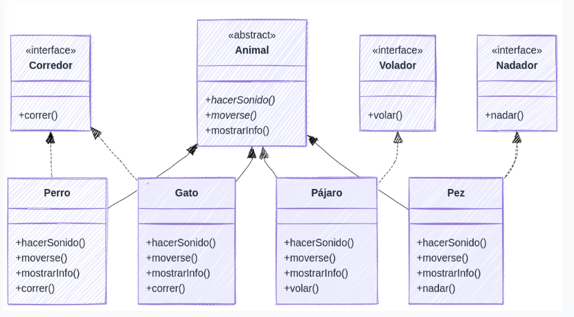

Ejercicio 1: Jerarquía de Animales
Enunciado
Implementa el siguiente diagrama de clases:

Inserta aquí la ruta de tu imagen
Solución Propuesta
Para resolver este ejercicio de forma ordenada, primero definiremos nuestra superclase abstracta, luego las interfaces de comportamiento, después las clases concretas de cada animal y finalmente el programa principal.
1. Clase Abstracta Base
package Tema6.Ejercicios.ejercicio1;
abstract class Animal {
public abstract void hacerSonido();
public abstract void moverse();
public void mostrarInfo() {
System.out.println("Este es un animal de la clase: " + this.getClass().getSimpleName());
}
}2. Interfaces de Comportamiento
package Tema6.Ejercicios.ejercicio1;
public interface Corredor {
void correr();
}package Tema6.Ejercicios.ejercicio1;
public interface Nadador {
void nadar();
}package Tema6.Ejercicios.ejercicio1;
public interface Volador {
void volar();
}3. Clases de Animales (Implementación)
package Tema6.Ejercicios.ejercicio1;
class Perro extends Animal implements Corredor {
@Override
public void hacerSonido() {
System.out.println("El perro ladra: ¡Guau!");
}
@Override
public void moverse() {
System.out.println("El perro se mueve por el suelo.");
}
@Override
public void correr() {
System.out.println("El perro está corriendo.");
}
}package Tema6.Ejercicios.ejercicio1;
class Gato extends Animal implements Corredor {
@Override
public void hacerSonido() { System.out.println("El gato maúlla: ¡Miau!"); }
@Override
public void moverse() { System.out.println("El gato salta y se estira."); }
@Override
public void correr() { System.out.println("El gato corre ágilmente."); }
}package Tema6.Ejercicios.ejercicio1;
class Pajaro extends Animal implements Volador {
@Override
public void hacerSonido() { System.out.println("El pájaro pía: ¡Pío!"); }
@Override
public void moverse() { System.out.println("El pájaro vuela de rama en rama."); }
@Override
public void volar() { System.out.println("El pájaro extiende sus alas y vuela."); }
}package Tema6.Ejercicios.ejercicio1;
class Pez extends Animal implements Nadador {
@Override
public void hacerSonido() { System.out.println("El pez hace burbujas: Glub."); }
@Override
public void moverse() { System.out.println("El pez nada por el agua."); }
@Override
public void nadar() { System.out.println("El pez está nadando."); }
}4. Clase Principal (Main)
En el programa principal hacemos uso del polimorfismo guardando todos los objetos en un array de tipo Animal y usamos la palabra reservada instanceof para comprobar qué interfaces implementan antes de llamar a sus métodos específicos.
package Tema6.Ejercicios.ejercicio1;
public class Main {
public static void main(String[] args) {
Animal[] misAnimales = { new Perro(), new Gato(), new Pajaro(), new Pez() };
for (Animal a : misAnimales) {
a.mostrarInfo();
a.hacerSonido();
a.moverse();
// Comprobamos interfaces usando instanceof
if (a instanceof Corredor) { ((Corredor) a).correr(); }
if (a instanceof Volador) { ((Volador) a).volar(); }
if (a instanceof Nadador) { ((Nadador) a).nadar(); }
System.out.println("--------------------");
}
}
}